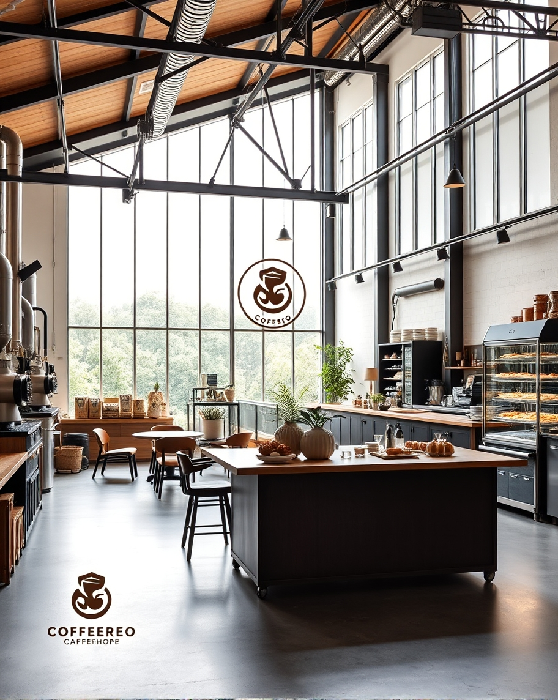

"以咖啡香為詩，麵包唯韻，譜寫屬於你的味蕾詩篇。

在喧囂城市的一角，綠崗麵包工坊像是一座孤島，
靜靜地訴說著關於麵粉、酵母和時間的故事。
透過落地窗，陽光灑落在揉麵台上，烘焙師的手在麵糰上輕柔地舞動，
就像一位藝術家在創作，每一塊麵包都是一幅獨一無二的畫作。推開綠崗麵包工坊的門，
空氣中散發出家的味道。溫暖的燈光、木質的桌椅，佐以麵包與咖啡濃郁的香氣，都讓人感到無比的舒適。
坐在窗邊，看著街上的行人匆匆忙忙，而自己卻能靜靜地享受著一杯咖啡和一份手工麵包，
那種寧靜的幸福感讓人難以言喻。